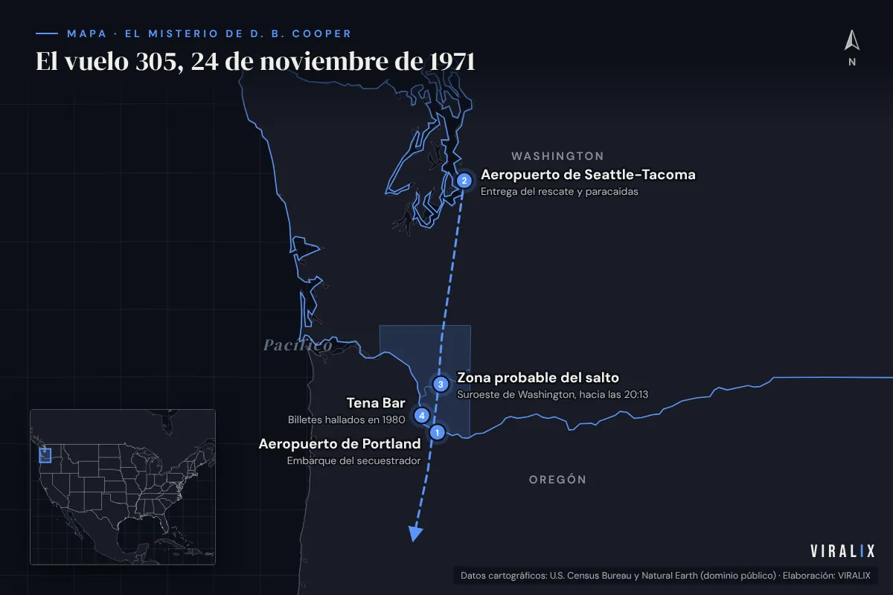
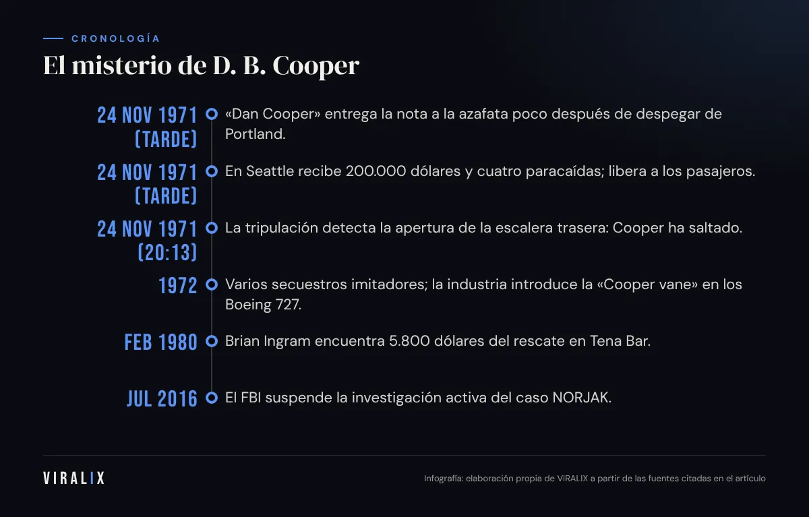
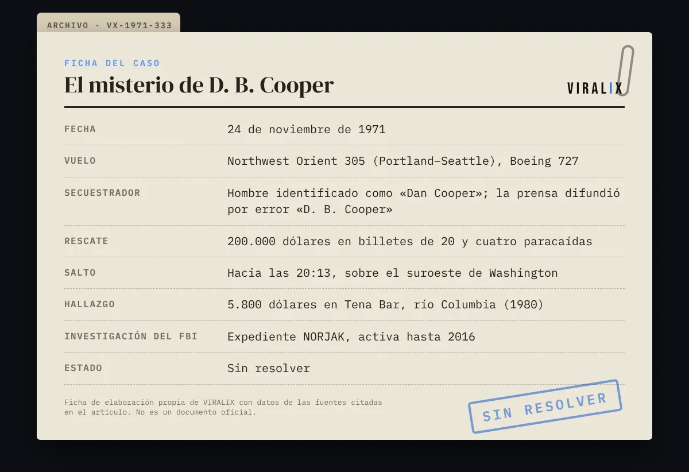

El 24 de noviembre de 1971, víspera del día de Acción de Gracias, un hombre de mediana edad, con traje oscuro, corbata estrecha y gafas de sol, compró en el aeropuerto de Portland (Oregón) un billete de ida a Seattle a nombre de Dan Cooper. Subió al vuelo 305 de Northwest Orient, un Boeing 727, se sentó al fondo del avión, pidió un bourbon con soda y, poco después del despegue, entregó una nota a una azafata.
Ese gesto dio inicio a uno de los grandes misterios del siglo XX. Horas más tarde, Cooper se lanzó en paracaídas desde el avión en plena noche, con 200.000 dólares atados al cuerpo, sobre los bosques del estado de Washington. Nunca se encontró ni a él ni a la mayor parte del dinero.
Una nota inesperada
La azafata Florence Schaffner pensó al principio que la nota era una proposición de un pasajero. Cooper le pidió que la leyera: decía que llevaba una bomba en el maletín. Para demostrarlo, abrió la maleta y le mostró unos cilindros rojos, cables y una batería. Sus exigencias eran precisas:
- 200.000 dólares en billetes de 20.
- Cuatro paracaídas: dos principales y dos de reserva.
- Un camión cisterna preparado en Seattle para repostar.
El comandante informó a tierra y la compañía decidió cumplir las exigencias para no poner en riesgo a nadie. A los pasajeros se les dijo que el avión sobrevolaba Seattle por un problema técnico menor. La mayoría no supo hasta después que viajaban en un avión secuestrado.
Seattle: dinero a cambio de pasajeros
El avión aterrizó en el aeropuerto de Seattle-Tacoma a primera hora de la tarde. El FBI había reunido el dinero —10.000 billetes de 20 dólares cuyos números de serie se fotografiaron— y los paracaídas. Cooper liberó a los 36 pasajeros y a parte de la tripulación a cambio del rescate. Durante toda la operación se mostró sereno, educado e incluso amable con la tripulación.
Después dio nuevas instrucciones: el avión debía despegar rumbo a Ciudad de México, con escala para repostar, volar a baja altitud y velocidad reducida, con los flaps parcialmente desplegados y la escalera trasera bajada. Los pilotos negociaron que repostaría en Reno (Nevada).

El salto
El avión despegó de Seattle hacia las 19:40 con Cooper y cuatro tripulantes, que permanecieron en la cabina por orden suya. Fuera llovía y hacía mucho frío. Hacia las 20:13, la tripulación notó un movimiento brusco en la cola: la escalera trasera se había abierto del todo. Cooper había saltado.
Cuando el avión aterrizó en Reno, la cabina estaba vacía. Solo quedaban en el asiento una corbata negra con un pasador, algunas colillas y dos de los paracaídas.
Cooper no hizo daño a nadie, no pidió nada para él más allá del dinero y se esfumó. Esa mezcla de audacia y misterio es la que ha convertido un delito grave en leyenda.
— VIRALIX
La mayor búsqueda de la historia del FBI
El FBI bautizó el caso como NORJAK (Northwest Hijacking) y desplegó una de las búsquedas más extensas de su historia: rastreos aéreos y terrestres, cientos de agentes y soldados peinando bosques, análisis de las condiciones de vuelo para estimar la zona de caída. No se encontró nada: ni el paracaídas, ni el cuerpo, ni el maletín.
Un error de la prensa
El nombre con el que el caso pasó a la historia nació de una confusión. En las primeras horas, la policía interrogó a un hombre de Portland llamado D. B. Cooper, que fue descartado de inmediato. Un periodista recogió ese nombre y la prensa lo difundió. El secuestrador nunca se llamó a sí mismo «D. B.»: solo Dan Cooper, probablemente un nombre falso.
El dinero del río
En febrero de 1980, un niño de ocho años, Brian Ingram, encontró mientras acampaba con su familia en Tena Bar, a orillas del río Columbia, tres paquetes deteriorados de billetes de 20 dólares: 5.800 dólares cuyos números coincidían con el rescate. El hallazgo reavivó el caso, pero también lo complicó: ¿cómo había llegado el dinero allí? ¿Por el río? ¿Lo enterró alguien? No hay respuesta concluyente.
- 24 nov 1971 (tarde)«Dan Cooper» entrega la nota a la azafata poco después de despegar de Portland.
- 24 nov 1971 (tarde)En Seattle recibe 200.000 dólares y cuatro paracaídas; libera a los pasajeros.
- 24 nov 1971 (20:13)La tripulación detecta la apertura de la escalera trasera: Cooper ha saltado.
- 1972Varios secuestros imitadores; la industria introduce la «Cooper vane» en los Boeing 727.
- Feb 1980Brian Ingram encuentra 5.800 dólares del rescate en Tena Bar.
- Jul 2016El FBI suspende la investigación activa del caso NORJAK.

Los sospechosos
A lo largo de los años, el FBI investigó a cientos de personas. Algunos nombres se han repetido en libros y documentales:
- Richard McCoy, autor de un secuestro aéreo muy similar en 1972. Fue detenido, pero el FBI consideró que no encajaba con las descripciones de los testigos del vuelo 305.
- Kenneth Christiansen, antiguo paracaidista militar y empleado de aerolínea, propuesto por un periodista y por su propia familia como posible candidato.
- Robert Rackstraw, veterano del ejército con formación en paracaidismo, objeto de un documental en 2016.
Ninguno ha podido vincularse de manera concluyente. El análisis de partículas en la corbata que dejó Cooper, realizado por investigadores privados con autorización del FBI, encontró restos de metales poco comunes que podrían apuntar a un trabajo en la industria aeroespacial o química, pero no a una persona concreta.
¿Sobrevivió?
El propio FBI ha manifestado su escepticismo. Los agentes señalan que Cooper saltó de noche, bajo la lluvia, sobre un terreno boscoso y abrupto, con ropa de calle, mocasines y un paracaídas que no eligió él. Para ellos, lo más probable es que no sobreviviera al salto. Sus partidarios replican que, si murió, alguien debería haber encontrado sus restos o el paracaídas en más de cincuenta años.
Por qué es único
D. B. Cooper ocupa un lugar especial en la historia del crimen por varias razones:
- Es el único secuestro aéreo sin resolver en la historia de la aviación comercial estadounidense.
- No causó víctimas, algo que explica en parte la simpatía popular que ha despertado.
- Su desaparición convirtió una figura anónima en un mito del folclore americano, con festivales anuales, canciones y series.
Pero conviene no idealizarlo: Cooper puso en riesgo la vida de decenas de personas con la amenaza de una bomba. La tripulación del vuelo 305, que mantuvo la calma durante horas, es la verdadera protagonista de esta historia.

Preguntas frecuentes
¿Se llamaba realmente D. B. Cooper?
No. Compró el billete como Dan Cooper, probablemente un nombre falso. «D. B. Cooper» fue un error de la prensa, que tomó el nombre de un hombre de Portland interrogado y descartado en las primeras horas.
¿Se encontró el dinero?
Solo una pequeña parte: 5.800 dólares hallados en 1980 por un niño en Tena Bar, a orillas del río Columbia. El resto de los 200.000 dólares nunca apareció.
¿Cerró el FBI el caso?
En 2016 el FBI anunció que dejaba de dedicar recursos activos a la investigación, aunque seguiría examinando pruebas físicas concretas relacionadas con los paracaídas o el dinero si aparecían.
¿Hubo heridos?
No. Ningún pasajero ni tripulante resultó herido, aunque la amenaza de bomba puso en riesgo a decenas de personas. Ese es uno de los motivos por los que el caso ha generado una extraña simpatía popular.
¿Por qué se ha convertido en un mito popular?
Porque combina audacia, misterio y ausencia de víctimas. El hombre tranquilo que pide un bourbon, trata con cortesía a la tripulación y desaparece en la noche con el dinero encaja con la figura del «bandido romántico» del folclore estadounidense. Cada año se celebran encuentros dedicados al caso en el estado de Washington, y su historia ha inspirado canciones, novelas y series. Esa fascinación convive con el recuerdo de que su delito puso en peligro a decenas de personas.
Fuentes y bibliografía
- FBI. «D. B. Cooper Hijacking», serie Famous Cases & Criminals. fbi.gov/history/famous-cases
- FBI Records: The Vault — «D. B. Cooper» (documentos desclasificados del expediente NORJAK). vault.fbi.gov
- FBI Seattle (12 de julio de 2016). Comunicado sobre la reasignación de recursos del caso NORJAK.
- Gray, Geoffrey (2011). Skyjack: The Hunt for D. B. Cooper. Nueva York: Crown.
- «D. B. Cooper», Wikipedia en español (punto de partida contrastado con las fuentes anteriores). es.wikipedia.org
Última revisión: .